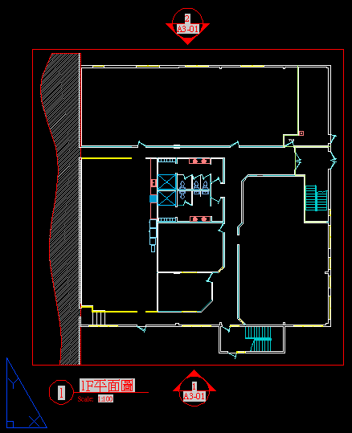
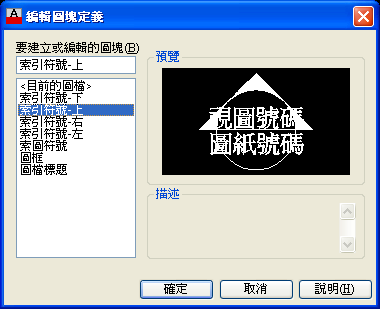
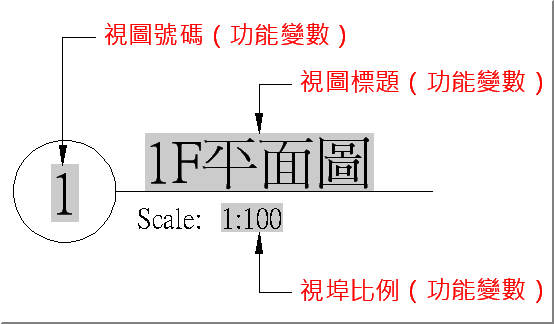
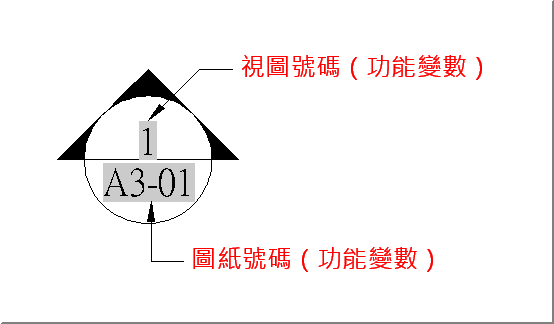
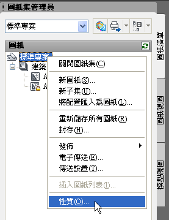
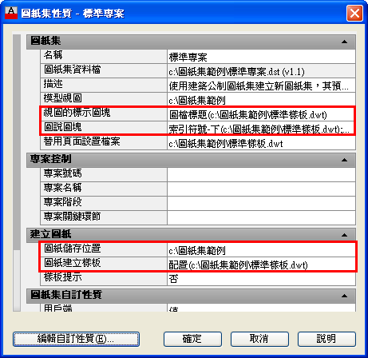
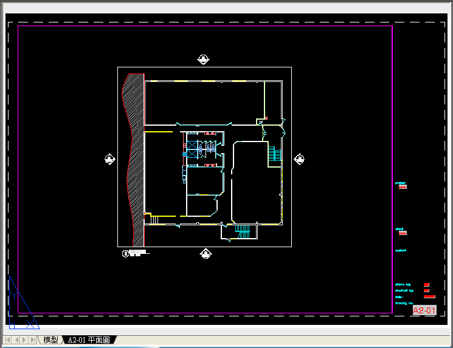
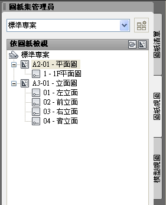

這次的主題延續了上一篇 「教學」圖紙集快速入門
自從開始運用「圖紙集」功能後，一直以來都只有使用「圖紙清單」及「模型視圖」。


這次跟大家分享「圖紙視圖」功能，這部份屬於高階管理運用層面，需搭配「DWT樣板」、「功能變數圖塊」及「圖紙集」等功能。
開始需要先組織設定，之後即可透過「DWT樣版」快速建立圖紙集的「圖紙」，接著即可「在圖紙上放置視圖」及「相互參考圖紙視圖」。

註：這作法很類似Revit元件資料庫管理方式，只不過Revit是一開始預設自動組織設定，在AutoCAD終究必須透過使用者手動方式自行建立。
1.需先建立「DWT樣板」範例建立了「標準樣板.dwt」，其中包含圖框及相關屬性圖塊。樣板檔名稱可自訂。

2.開啟「DWT樣板」製作屬性圖塊時，圖塊中要加入「功能變數品類」→「圖紙集佔位符」，並完成相對應圖紙集之功能變數圖塊。

3.「圖檔標題」圖塊範例：（文字中有灰階底色為功能變數）

4.「索引符號」圖塊範例：（文字中有灰階底色為功能變數）


5.開啟「圖紙集」→「滑鼠右鍵」→「性質」。

6.顯示「圖紙集性質」對話方塊 → 指定相對應的「樣板」及「圖塊」。

7.完成後的「平面圖」、「立面圖」及加入「索引符號」圖塊。


8.完成後的「圖紙集」：「圖紙清單」、「圖紙視圖」及「模型視圖」



專屬資源版區：
AutoCAD 圖紙集 - 圖紙視圖功能範例下載
https://www.autocad-tw.com/t23853-topic
一、在圖紙上放置視圖：圖紙集管理員提供在圖紙上，自動化放置「圖面視景」並提昇效能，這些視圖（VIEW）稱為「圖紙視圖」。
說明：
1.必須先開啟要放置視圖的圖紙，然後開啟模型視圖中的DWG檔案，再建立所需的視圖（VIEW）。
2.在放置該視景之前，按一下滑鼠右鍵，檢視或變更視景的比例。
3.圖紙中放置視圖後，AutoCAD會將包含具名視圖貼附為「外部參考」。
4.「圖紙視圖」即可自動建立相對應的「具名視圖」。
二、相互參考圖紙視圖：使用圖紙集管理員，可以將標籤和標示圖塊套用至圖紙上的視景。屬性圖塊中需使用「功能變數」，包含視圖標題、視圖號碼和圖紙號碼。
說明：
1.根據「索引」圖面需求，可以在圖紙上的任何位置按一下，以放置標示圖塊完成「索引」。
2.加入的「索引符號」圖塊，可以使用「CTRL」+「滑鼠左鍵」開啟對應的圖紙（DWG）或視圖（VIEW）。
3.當索引參考資訊更名變更時，重生圖面時可自動更新「索引符號」圖塊中的資訊。